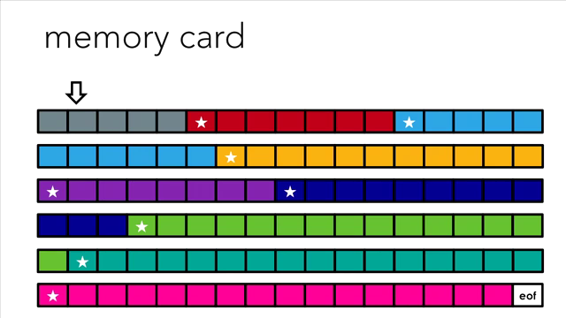

Suite à un problème technique avec un appareil photo, la carte mémoire a été endommagée. Des experts ont toutefois réussi à en récupérer une bonne partie.
Vous vous retrouvez donc en possesion de ce fichier binaire : MemoryCard. L'objectif de cette activité sera de retrouver les photos prises par cet appareil (et donc disponible sur la carte mémoire).
Vous êtes libre d'utiliser le fichier et le traiter (grâce à Python) comme vous le souhaitez.
Le format des photos est jpg. Ce format est plus compliqué à appréhender car la composition d'un fichier jpg n'est pas constitué d'une suite de pixels (décliné en RGB).
Par contre, vous disposez des informations suivantes :
La carte mémoire utilisée par les appareils photos est au format FAT, ce qui implique que les informations sont stockées sous la forme de blocs de taille 512 bytes.
Les quatre premiers octets d'un fichier jpg sont 0xff 0xd8 0xff 0xe0 ou alors 0xff 0xd8 0xff 0xe1.
Voici à quoi correspondrait le fichier MemoryCard dont vous disposez :
Il faut donc ecrire votre code dans un fichier.
L'enregistrer sous la forme prenom_nom_tpInfo2.py et l'envoyer, ainsi que toutes les photos récupérées, dans un dossier compressé prenom_nom_tpInfo2.zip par courriel.